4,534full ROOT inputs
317,400,623events processed
130analysis plots
54high-dM search bins
352/352valid expected-limit ROOTs
1,350 GeVmax excluded mStop for mLSP <= 100 GeV
Run-2 SUS-19-010 Comparison
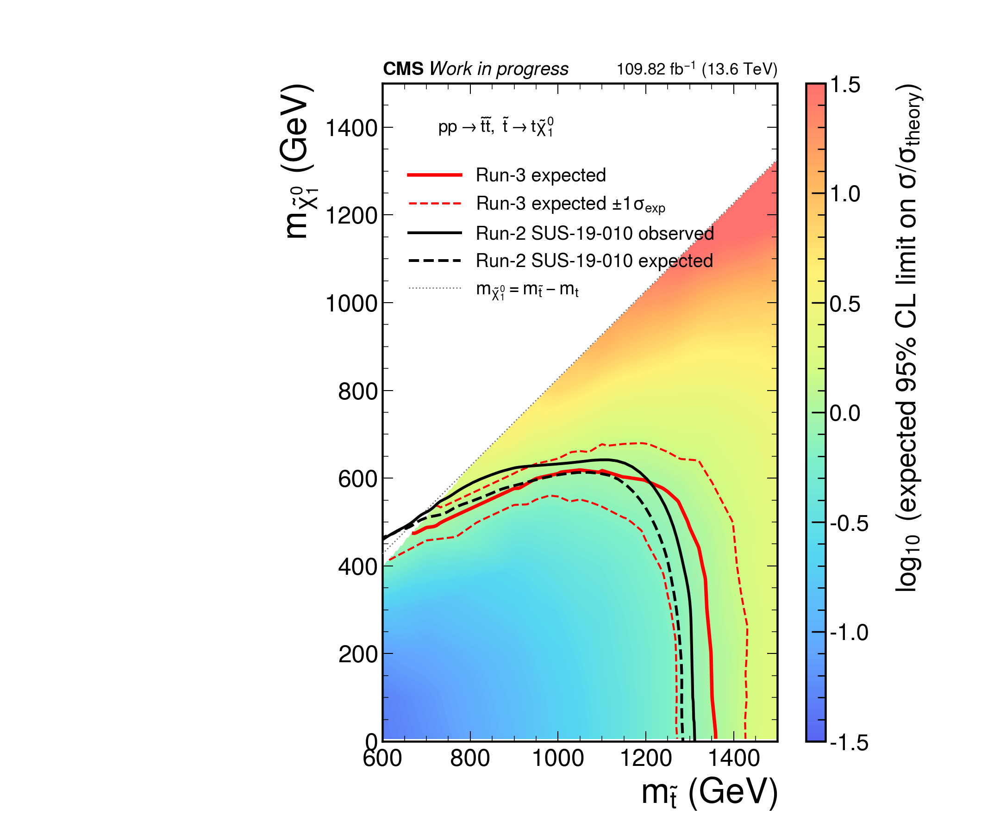
Combine v10.0.1, AsymptoticLimits, blind expected. 배경은 log10(expected 95% CL limit on sigma/sigma_theory) heatmap이며, 빨강 실선과 점선은 Run-3 54-bin median expected r=1과 ±1σ expected contour입니다. 검정 실선과 점선은 각각 Run-2 SUS-19-010 observed와 expected contour입니다. 이전 heatmap plotting code의 600-1500 GeV 표시 범위와 12×10 inch 크기를 유지했습니다. Best grid point: mStop600_mLSP1, median r=0.04395.
관심 구간
mStop ≤ 1500 GeV의 공통 157개 지점에서 54-bin median expected r는 이전 42-bin보다 전 지점에서 낮았습니다. 중앙값 비 r54/r42=0.956, expected-excluded grid point는 65개에서 69개로 증가했습니다.Pipeline Status
| Intermediate ROOT | complete · 4,534 files |
|---|---|
| Histogram merge | complete · 317,400,623 events |
| Plots | complete · 130 PNG + 130 PDF |
| Signal categorization | complete · 54 high-dM bins · 9 category blocks × 6 recoil bins · latest Nt=0 W split |
| Combine inputs | complete · 7 channels · 352 datacards |
| Expected limits | complete · 352 valid · 0 missing · 0 invalid · 1 expanded-rMax recovery |
| Run-2 reference | complete · CMS SUS-19-010 observed and expected contours |
| Bad ROOT files | 0 recorded |
Machine Outputs
run summary · 54-bin definition · 42/54-bin comparison · expected limits · limit status · overlay summary · SUS-19-010 contours · histogram summary · plot summary · plot manifest
Selected Analysis Plots
{kind=link}
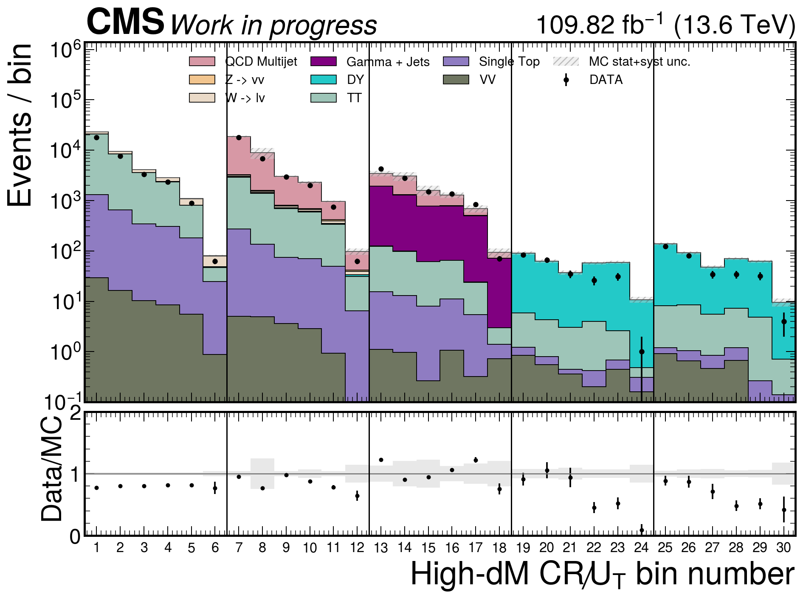
highdm_cr_recoil_inclusive{kind=link}
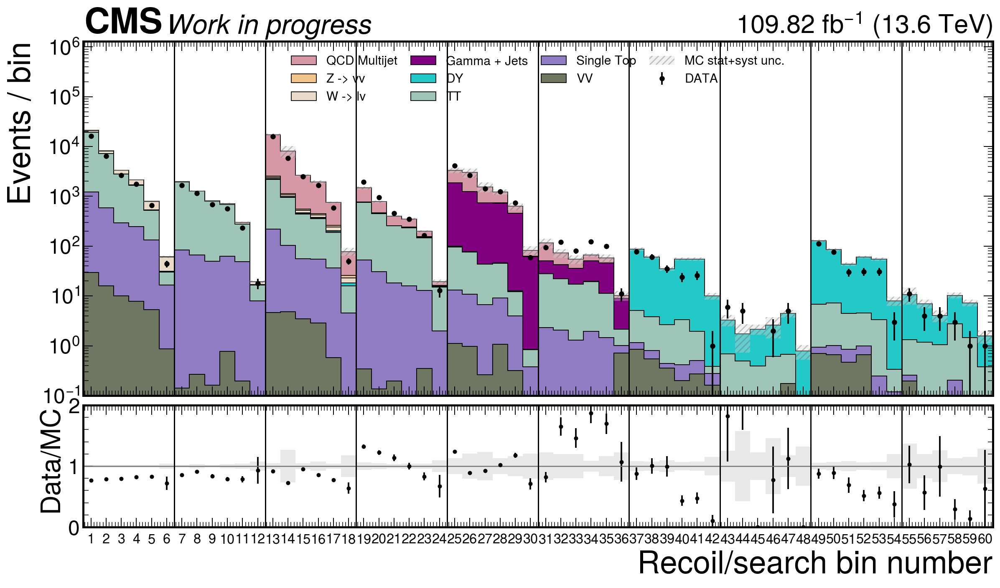
highdm_cr_recoil_ntop_split{kind=link}
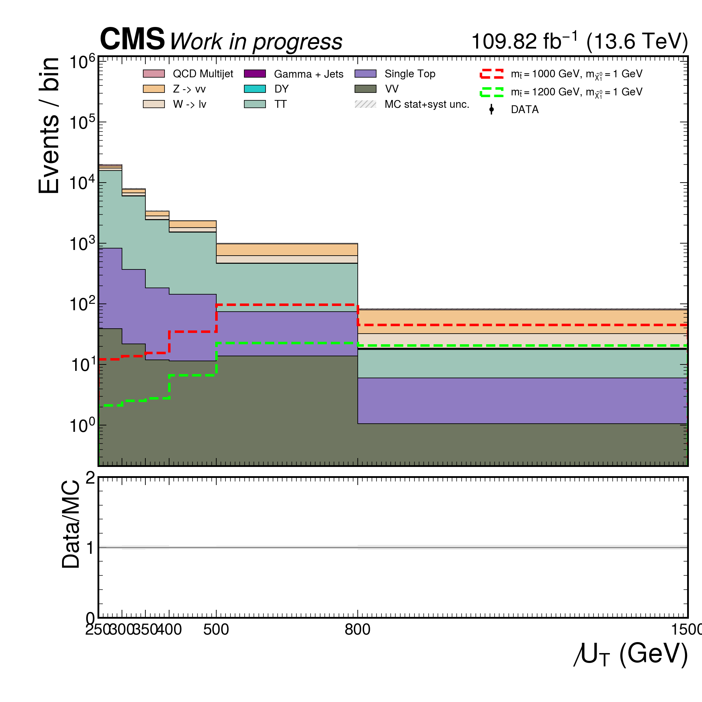
highdm_sr_recoil_inclusive{kind=link}
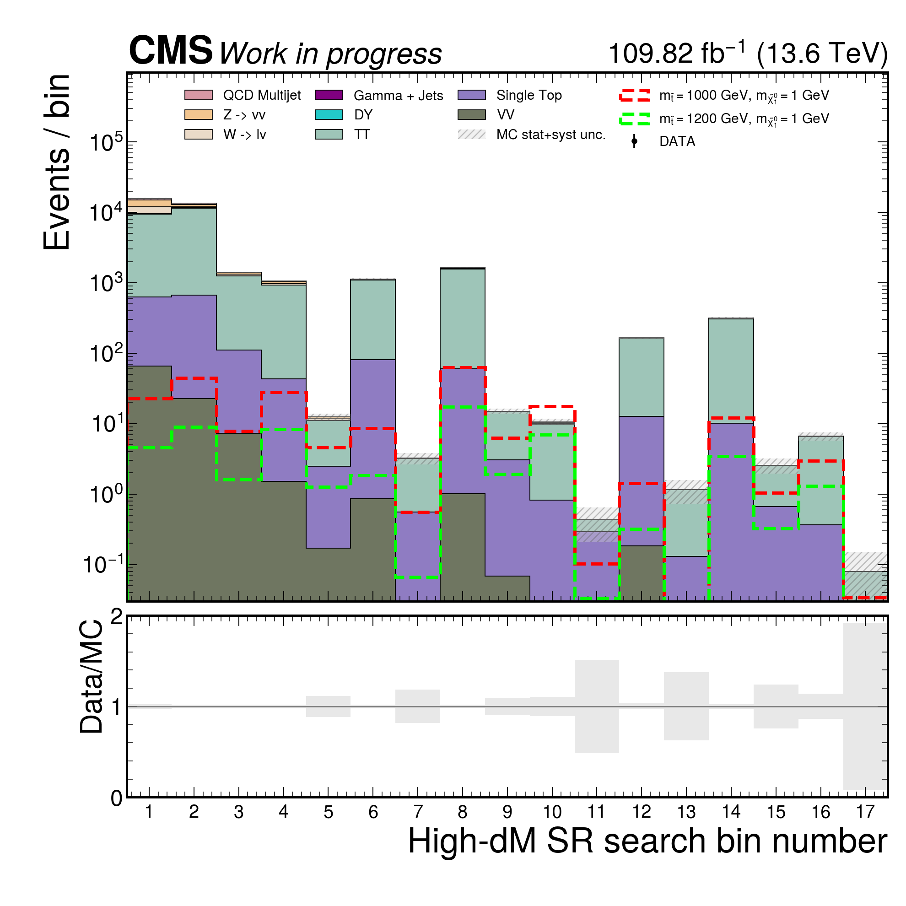
highdm_sr_an17_search_bins{kind=link}
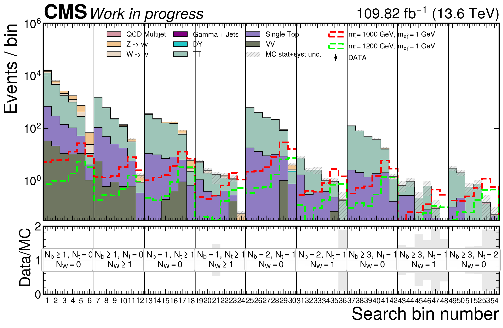
highdm_sr_selected_recoil54_nt0_wsplit_bins{kind=link}
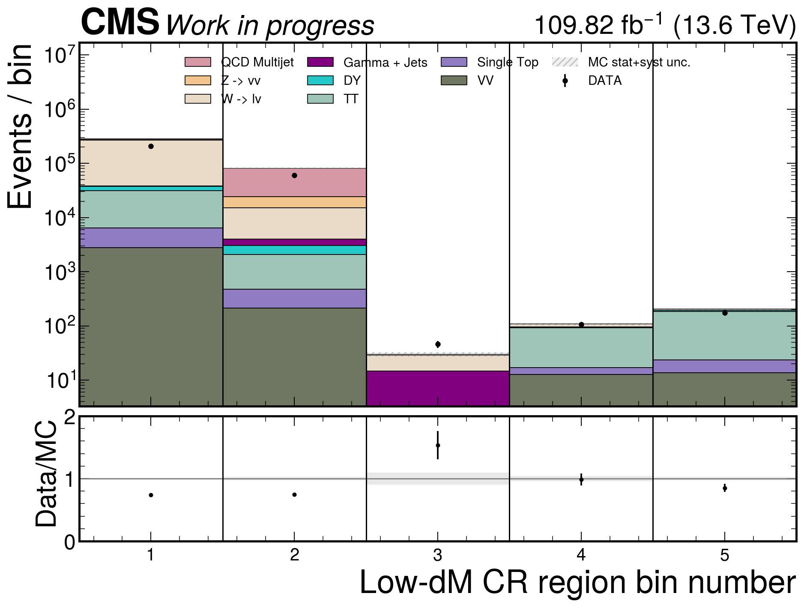
lowdm_cr_onebin{kind=link}
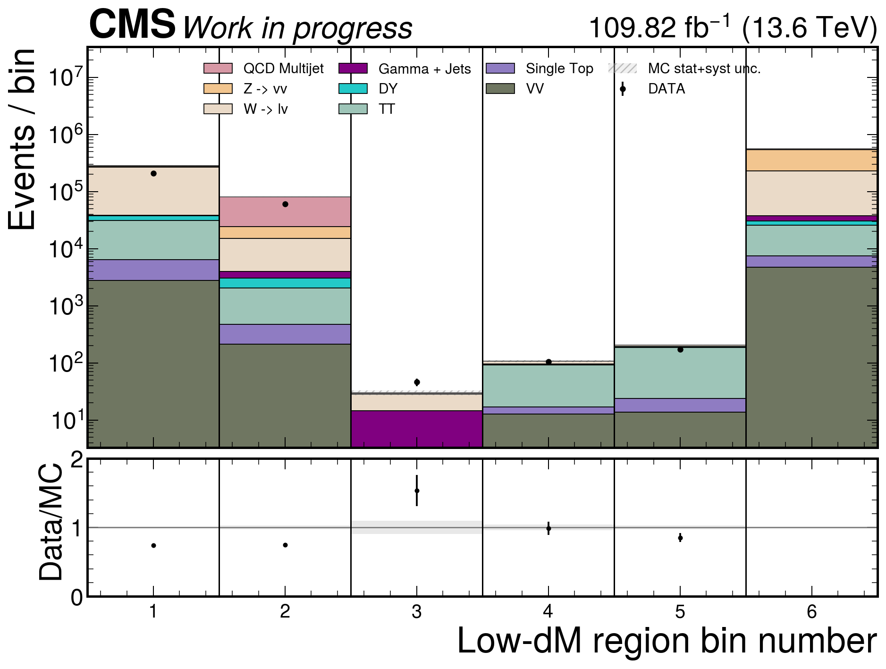
lowdm_cr_sr_onebin lowdm_sr_onebin
lowdm_sr_onebin{kind=link}
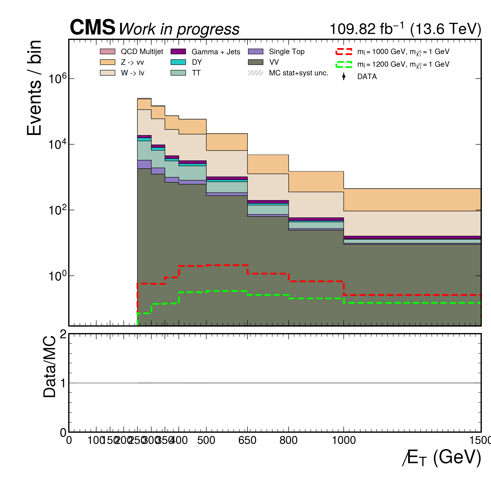
lowdm_sr_sr_met{kind=link}
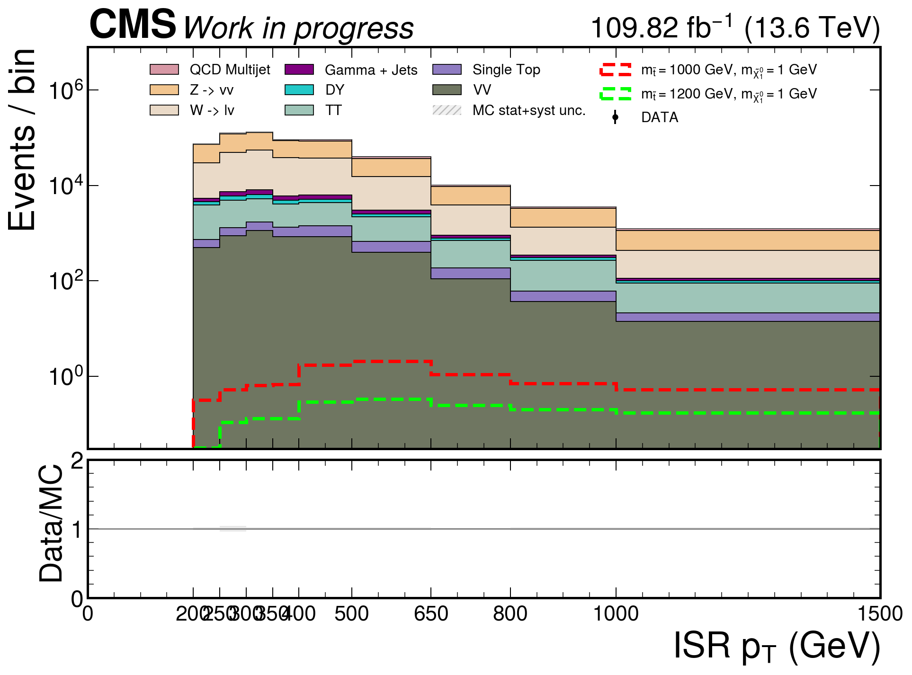
lowdm_sr_sr_lowdm_isr_pt{kind=link}
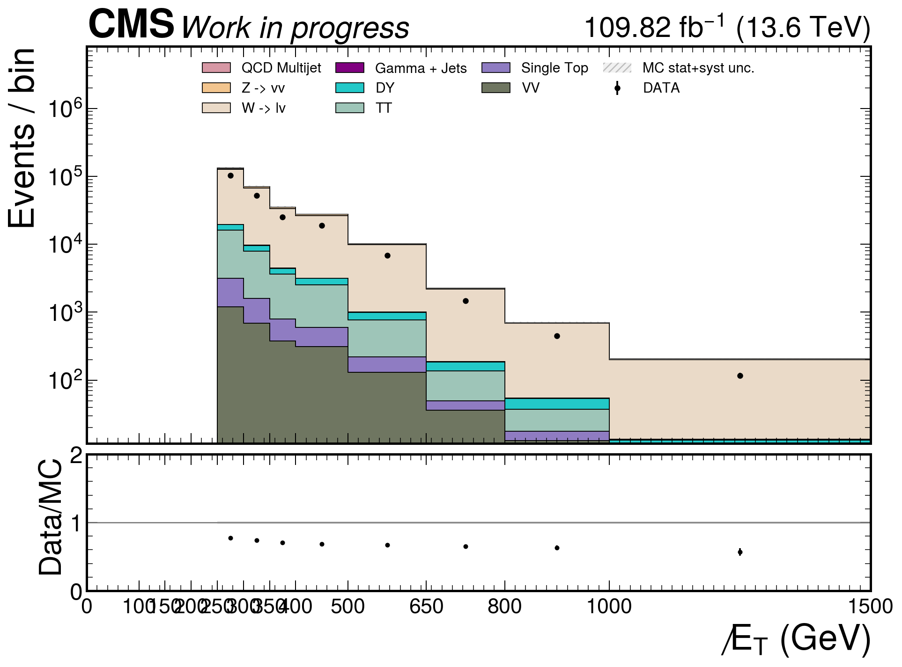
lowdm_cr_llcr_met{kind=link}
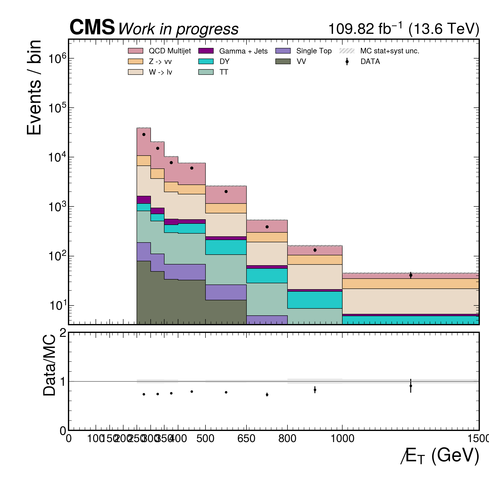
lowdm_cr_qcdcr_metExecution Policy
산출물과 런타임 임시 디렉터리는 EOS만 사용했습니다. AFS와 시스템 /tmp에는 쓰지 않았고 decaf/analysis는 수정하지 않았습니다. 플롯은 기존 plotting code와 기존 캔버스 크기를 사용했습니다. 이 페이지는 기본 docs/index.html과 분리되어 있습니다.
Generated 2026-07-10T18:03:03.751263+00:00 from machine-readable outputs.